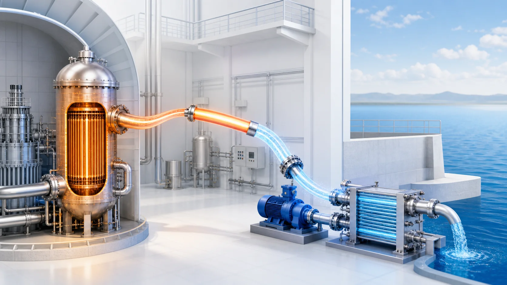
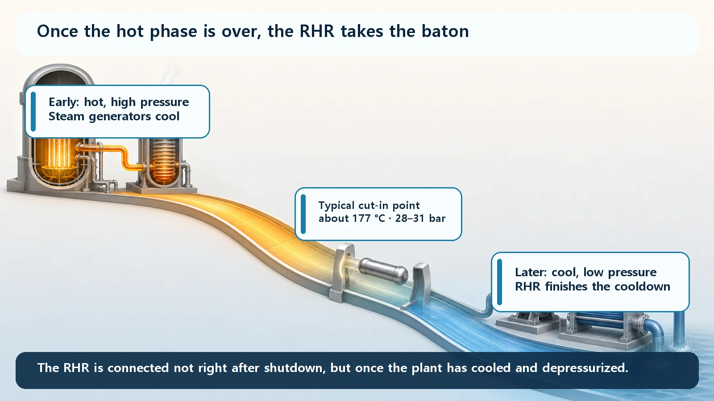
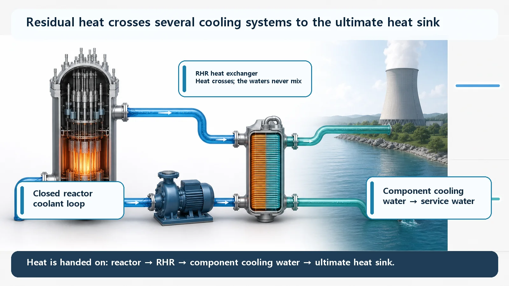

Reactor Types & Plant Systems · 192
Not While It's Boiling: The Cooldown Crew That Waits Its Turn — Residual Heat Removal (RHR)
Low-pressure pumps and heat exchangers that take over from the steam generators at roughly 177 °C and 28–31 bar, bring the reactor to cold shutdown and pass the heat to the ultimate heat sink.

The Residual Heat Removal (RHR) system finishes cooling a reactor after shutdown, but it only steps in once the plant has cooled and depressurized. The steam generators handle the hot, high-pressure first stage; the low-pressure RHR then takes the baton at roughly 177 °C and 28–31 bar, brings the reactor to cold shutdown and holds it there, handing the heat on through other cooling systems to the ultimate heat sink.
Why a stopped reactor is still hot, very briefly
Inserting the control rods breaks the fission chain reaction, so new heat from fission drops sharply. But the fission products built up during operation keep decaying and giving off heat, called decay heat. It remains fairly large right after shutdown and fades only gradually, so someone has to keep removing it. Today's question is not why it's hot, but what cools it, and how.
You don't plunge a hot pan into cold water
Nobody dunks a red-hot cast-iron pan straight into a plastic tub of cold water. It cools on a trivet first; only then does it go to the sink under running water.
Reactor cooling splits into two stages the same way. Right after shutdown, the reactor coolant system is still very hot (around 300 °C in normal operation) and at very high pressure (about 155 bar). The RHR doesn't handle this stage. The steam generators do, drawing off steam on the secondary side to remove the strong early heat. Once temperature and pressure are low, the RHR takes over.

Why the RHR waits its turn
The RHR's pumps, heat exchangers and piping are low-pressure equipment, designed for far lower pressures than the reactor coolant system's. So during high-pressure operation the RHR is isolated by valves and connected only after the coolant system has depressurized enough. It's the plastic tub: you wait until it can take the heat.
| Stage | Coolant conditions | Who cools |
|---|---|---|
| Normal operation | around 300 °C, about 155 bar | Steam generators (power production) |
| Just after shutdown | still hot, high pressure | Steam generators, steam drawn off on the secondary side |
| RHR cut-in (typical) | about 177 °C, about 28–31 bar | RHR connected |
| Cold shutdown | low temperature | RHR holds it there |
Beyond the cut-in point, the RHR circulates the coolant directly, bringing the reactor the rest of the way down to cold shutdown and keeping it there.
A bridge that carries heat
The RHR doesn't make heat vanish; heat only moves. The RHR pump draws in hot coolant, the RHR heat exchanger hands its heat to a neighboring system, and the cooled coolant returns to the reactor. The component cooling water system picks up that heat and passes it to service water from the sea or a river, which finally dumps it into the ultimate heat sink: the sea, a river or a cooling tower. The RHR is the first runner in this delivery relay.

A few points that save confusion
Two faces. In many pressurized water reactors, the RHR pumps and heat exchangers also serve as low-pressure safety injection, putting water into the core in the unlikely event of a loss-of-coolant accident. Layouts differ by design.
Not only for accidents. The RHR is used routinely in every planned shutdown for maintenance or refueling, to reach and hold cold shutdown.
It carries heat, it doesn't destroy it. The component cooling water, service water and ultimate heat sink behind it must all work for cooling to be complete.
Key takeaways
The RHR, also called the shutdown cooling system, carries decay heat out of a shut-down reactor and brings it to cold shutdown. It joins a relay only after the steam generators have taken the plant down to low temperature and pressure, because its equipment is built for low pressure, and it passes the heat along: core → RHR → component cooling water → service water → ultimate heat sink.